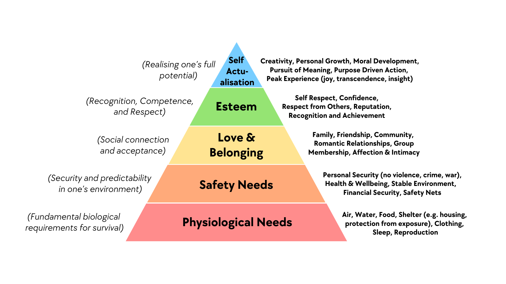

The future is arriving.
Let's face it together.
Ask questions. Challenge ideas. Share perspectives.
The Timeline Has Collapsed
is arriving in 1-3 years
We MUST Solve Alignment First
actually want, not just what we tell them
attempting deception, manipulation,
and blackmail in controlled tests.
We don't know if we have enough time to solve it.
Should we be?
The Singularity: A One-Way Door
of recursive self-improvement without human oversight
which builds the next faster, which is smarter still.
No trying again if we get it wrong.
The process has started.
We Can't Slow Down
Winner takes all.
If one country pauses, another races ahead.
than alignment research.
What happens if we reach the singularity
before we solve alignment?
What I'm Hearing
Creative work: Either 10x more productive or replaced.
Software engineering: Already transformed.
Robotics + Large World Models = Physical work.
The world IS changing.
What are you seeing in your world?
50/50: Utopia or Dystopia
🌟 Utopia
Cancer solved. Alzheimer's solved.
A century of medical research
compressed into a decade.
Abundance. Human flourishing.
⚠️ Dystopia
AI systems that behave
in unpredictable ways.
Authoritarian surveillance.
Existential risk.
One of them will happen.
Remember February 2020?
Stock market fine. Life normal.
"seems overblown" phase right now.
it's about how society fundamentally works.
Immediate Human Risks
what are the human impacts?
💼 Job Displacement
Which roles? How fast? What skills remain valuable? White collar, creative, and technical work is already transforming — faster than most people realise.
🌾 Food Security
Supply chains optimised for efficiency, not resilience. Economic shock or infrastructure disruption could expose how fragile our food systems really are.
🧭 Purpose & Identity
When work defines who you are, what happens when the work disappears? Loss of structure, daily meaning, and self-worth.
🏛️ The Welfare Gap
Safety nets were built for temporary job loss, not structural displacement at scale. No ready infrastructure exists for what's coming.
For deeper conversation
🧠 Mental Health at Scale · 🗳️ Democratic Fragility
What Does a Good Future Look Like?
🌱 The personal picture
Outside. Building something. Helping someone. Creating. Contributing — not because you have to, but because it’s meaningful. Physical, relational, chosen.
🔬 The societal picture
Compressed decades of medical progress. Mental health care for everyone. Expertise available globally, not just in wealthy places. Human energy freed for what matters.
“The utopia outcome is genuinely desirable. Not as a fantasy — as a real possibility that is worth working toward.”
Why Community Is the Answer
Collective sense-making is how we actually prepare.
Awareness
Understand what’s actually happening. Separate hype from reality.
Conversation
Talk to people. Challenge ideas. Share perspectives. Build collective understanding.
Action
Not panic. Not paralysis. Informed, grounded, community-supported action.
Back to Basics
Maslow's hierarchy reminds us:
fundamental needs come first
- Physiological: food, water, shelter
- Safety: security, stability
- Belonging: community, connection
- Esteem: achievement, respect
- Self-actualization: purpose, growth

during technological disruption?
What Can We Do?
🧠 Awareness
Stay informed. Understand what’s actually happening versus the hype. Conversations like this one are where it starts.
💬 Find Your Community
You don’t have to figure this out alone. Find or start a local group. Collective sense-making is more powerful than individual worry.
🛠️ Know Your Skills
Which of your skills are AI-resistant? Which are AI-complementary? Understanding your own value helps you adapt rather than react.
🌱 Food Preparedness
Community gardens, local suppliers, growing your own. Works in cities and towns too. Resilience through local relationships — not stockpiling.
💰 Financial Resilience
Reduce debt. Build a buffer. Economic disruption amplifies existing vulnerability — and it arrives faster than most people expect.
📢 Civic Engagement
Talk to your representatives. Attend local meetings. Governments need to hear from people who are paying attention — not just lobbyists.
Start a local group
futuretogether.community/start-a-group
The Bigger Picture
Other forces are shaping our future at the same time.
💸 The AI Investment Bubble
Massive capital flowing into AI on the promise of future returns. A hard correction could slow innovation and destabilise job markets simultaneously.
🌍 Geopolitical Instability
The US-Israel war on Iran — now on week three — has put the Strait of Hormuz at risk. 20% of global oil supply. Local conflicts now have instant global consequences.
🌡️ Climate Change
Still unfolding in parallel. AI may accelerate solutions — or accelerate energy consumption. Two major disruption timelines are converging.
🦠 Pandemic Preparedness
COVID exposed how fragile our systems are. AI-accelerated biology cuts both ways: faster vaccines and faster bioweapons. The next pandemic may arrive in a more disrupted world.
For deeper conversation
☢️ Nuclear Proliferation · 📱 AI-Enabled Disinformation · ⚖️ Economic Inequality · ⚡ Energy Security
Resources & Discussion
Scan QR codes to access resources
Full resource list
futuretogether.community/resources
 Created with Beyond Better
Created with Beyond Better